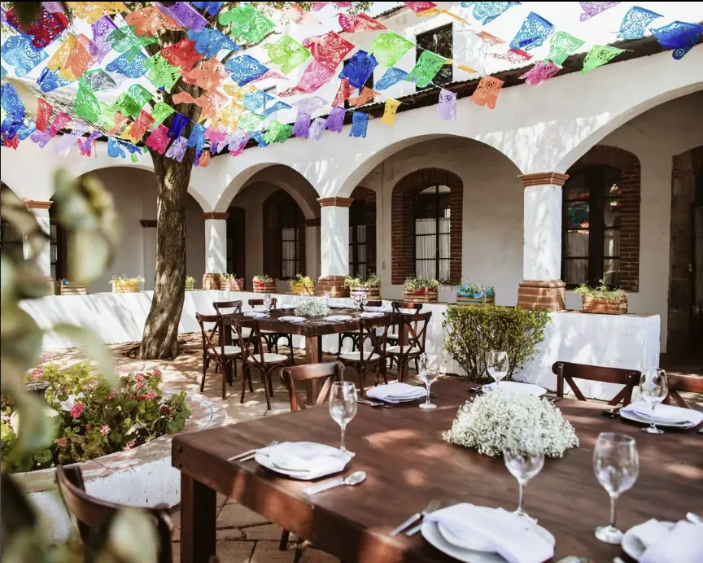
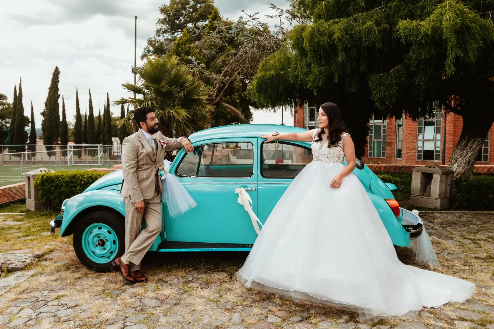

Macarena & Javier
Rancho Zacatepec · San Isidro Chipila

Bodas en Tlaxcala
Fotografiamos bodas en haciendas y espacios llenos de historia en distintas regiones de Tlaxcala. Planeamos cada recorrido y trabajamos con fotografía y video para conservar la emoción, el ambiente y la forma en que cada pareja vivió ese día.
Después de más de 300 bodas y 13 años de experiencia, sabemos que cada celebración tiene un ritmo propio. Nuestro equipo anticipa los momentos importantes para que ustedes puedan disfrutar con tranquilidad.
Historias reales
Celebraciones en Huamantla, Atlihuetzian, Tlaxco, San Isidro Chipila y distintos lugares del estado.

Hacienda Soltepec · Huamantla

Recepciones Casa 57 · Atlihuetzian

Rancho Zacatepec · San Isidro Chipila
Ex Hacienda San Buenaventura · Tlaxco
Hacienda Tepetzala · Tlaxcala
Ex Fábrica de Santa Elena · Tlaxcala
Cada espacio aporta una atmósfera diferente. Nuestro trabajo es conservar aquello que hizo única a cada celebración.
Ver todas las historias de boda →
Una cobertura planeada
Héctor Jiménez dirige el área de fotografía y Antonio Reyes el área de video. Trabajan acompañados por fotógrafos, operadores de cámara y editoras que siguen procesos definidos para mantener la calidad y el estilo.
Conocemos su historia, la fecha, las locaciones y lo que desean conservar.
Definimos horarios, recorridos y los momentos importantes de la celebración.
Trabajamos con un plan y un equipo coordinado durante toda la cobertura.
A las dos semanas enviamos las fotografías para selección. La entrega completa tarda entre cuatro y cinco semanas.
Inversión y reservación
La fecha se reserva mediante contrato y un anticipo del 20% del paquete elegido.
Preguntas frecuentes
Según el paquete, pueden incluir fotografía, video, tomas con dron, sesiones, fotolibro y entre 7 y 10 horas de cobertura.
Sí. Hemos documentado bodas en Huamantla, Tlaxco, San Isidro Chipila y otros lugares del estado. Revisamos los recorridos y horarios de cada celebración antes de la fecha.
Enviamos las fotografías para selección dos semanas después de la boda. La entrega completa puede estar lista en cuatro semanas o hasta cinco durante temporada alta.
La fecha se reserva al firmar el contrato y cubrir el 20% del paquete. El 70% se paga dos semanas antes de la boda y el 10% restante al entregar el material.
Disponibilidad
Compártannos la fecha, el lugar y la cobertura que están buscando. Les responderemos personalmente por WhatsApp.